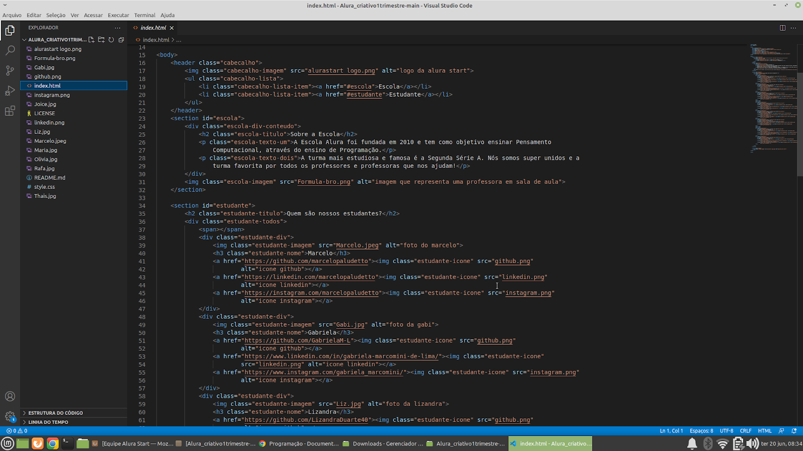

Index
Para a primeira parte deste site foi adicionado um cabeçalho onde vai ter uma foto do lado, e um texto, representando uma turma, coloquei uma seção para explicar um pouco sobre a escola e sobre os alunos, os estudantes da turma.
Esse é o site atráves do visual de fora.
Logo após, foi realizada uma sessão de estudantes, na qual havia fotos de estudantes em que foi disponibilizado o curso da plataforma Alura. Embaixo das fotos há um ícone do instagram com um link do instagram da aluna, e assim sucessivamente com as outras redes sociais como linkedin e o github.

Rodapé
No rodapé do site foi adicionado o logo da Alura.
Style
Para a segunda parte deste site usamos o style onde realizamos a edição em tag, definimos a cor de fundo, formato, letra e o visual externo do nosso site.
Conclusão
Este trabalho foi realizado para a culminância dos itinerários. Diante deste trabalho foi possível aprender a linguagem do HTML e CSS, que são importantes para o desenvolvimento de sites e aplicativos, para o desenvolvimento no itinerário formativo na trilha de programação.